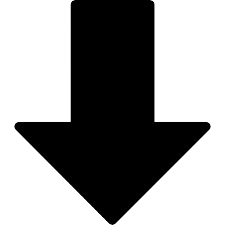

Dafne era hija de Peneo, quien, como todos los ríos, tenía poderes divinos. Podía, entre otras cosas, prever el futuro y transformar a las personas en bestias.
-¡Ayúdame, padre, por piedad! -repitió Dafne.
Peneo arremolinó sus aguas, alarmado. Llevaba algún tiempo disgustado con su hija, porque ella se negaba a casarse y a darle nietos, pero no dudó en prestarle su ayuda, pues la quería con toda su alma. De repente, Dafne dejó de correr, y su cuerpo se volvió rígido como una piedra. Una fina costra cubrió su pecho y endureció su vientre, sus blancos brazos se convirtieron en ramas, y su larga cabellera se transformó en una copa de espesas hojas. De sus pies nacieron raíces que se hundieron en la tierra, y su rostro, su bello rostro de rosadas mejillas, se transformó en una dura corteza. Peneo había pensado que la mejor manera de salvar a su hija era despojarla de su forma humana, así que había convertido a Dafne en un laurel, en el primer laurel que existió en el mundo.
Cuando Apolo vio lo que había pasado, rompió a llorar como un niño. Ya no importaba cuánto amor le ofreciese a Dafne: ella nunca podría corresponderle. Roto de dolor, Apolo acarició las hojas del laurel, besó sus ramas y abrazó su recio tronco, y entonces le pareció que el árbol temblaba entre sus manos.
